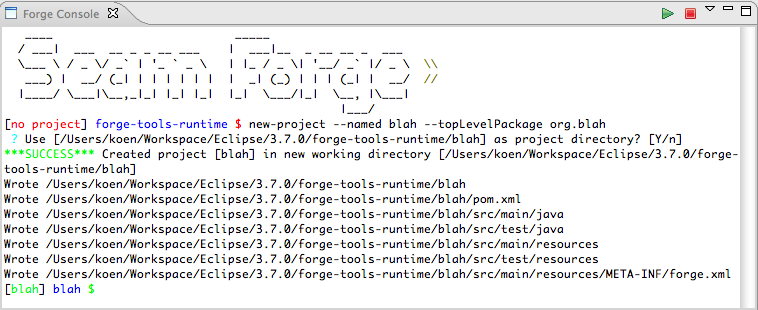
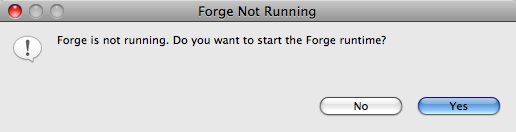

|
| New Embedded Forge Runtime |
The embedded runtime is now the 1.0.0.Beta3 release of Forge.
|
|
| Support For Colours |
The Forge Console now supports colours. At the moment this colours are fixed but in the future it will be
possible for users to customize this using the Eclipse preference pages.

|
|
| Improved Forge Startup Experience |
The Command Quick Access that was added in the previous release has been augmented with Forge startup functionality.
If the Ctrl+4 (or Cmd+4 on Mac) combination is hit and Forge is not running a popup will ask the user if it's OK to launch
Forge. If the user presses 'Yes' the Forge runtime is started and the Forge console view is opened and/or brought in focus.

|
|
| Improved Editing Experience |
There were a lot of issues with respect to editing in the previous releases such as:
- arrow keys not working properly
- issues after repositioning the cursor with the mouse
- long key presses did not work (e.g. to delete multiple characters you had to repeatedly press delete)
Most of these issues had to do with the limited support for ANSI character codes. This support was extended
so that commands such as 'clear' also behave properly now.
|
|